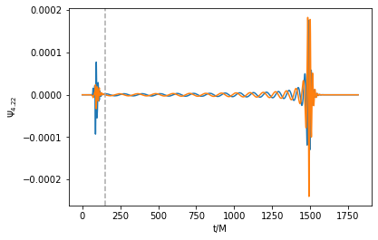
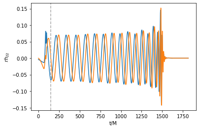
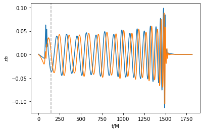
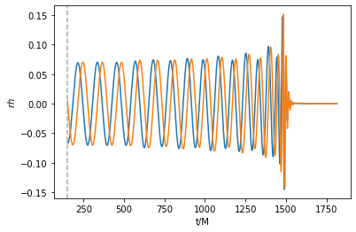

Gravitational Waves
[1]:
from mayawaves.coalescence import Coalescence
import matplotlib.pyplot as plt
import numpy as np
Create a Coalescence object using the simulation h5 file
[2]:
example_h5_filename = "../example_simulation/D11_q5_a1_-0.362_-0.0548_-0.64_a2_-0.0013_0.001_-0.0838_m533.33.h5"
[3]:
coalescence = Coalescence(example_h5_filename)
Read the \(\Psi_4\) data for a given mode and extraction radius
Note that the initial ~(75 + extraction_radius) M will be junk radiation and should be cut off for most analyses. That time is marked in the following tutorial with a vertical dashed line.
[4]:
time_psi4, real, imag = coalescence.psi4_real_imag_for_mode(l=2, m=2, extraction_radius=75)
[5]:
plt.plot(time_psi4, real)
plt.plot(time_psi4, imag)
plt.xlabel('t/M')
plt.ylabel(r'$\Psi_{4. 22}$')
plt.axvline(x=150, c='#a9a9a9', linestyle='--')
plt.show()

Read the strain data for a given mode and extraction radius
[6]:
time_strain, rh_plus, rh_cross = coalescence.strain_for_mode(l=2, m=2, extraction_radius=75)
[7]:
plt.plot(time_strain, rh_plus)
plt.plot(time_strain, rh_cross)
plt.axvline(x=150, c='#a9a9a9', linestyle='--')
plt.xlabel('t/M')
plt.ylabel(r'$rh_{22}$')
plt.show()

If no extraction radius is given, the radiation is extrapolated to infinite radius
[8]:
time_strain_extrapolated, rh_plus_extrapolated, rh_cross_extrapolated = coalescence.strain_for_mode(l=2, m=2)
[9]:
plt.plot(time_strain_extrapolated, rh_plus_extrapolated)
plt.plot(time_strain_extrapolated, rh_cross_extrapolated)
plt.axvline(x=150, c='#a9a9a9', linestyle='--')
plt.xlabel('t/M')
plt.ylabel(r'$rh_{22}$')
plt.show()

Recombine the modes to obtain the strain at a given sky location
[10]:
time_strain, rh_plus, rh_cross = coalescence.strain_recomposed_at_sky_location(theta=0, phi=0)
[11]:
plt.plot(time_strain, rh_plus)
plt.plot(time_strain, rh_cross)
plt.axvline(x=150, c='#a9a9a9', linestyle='--')
plt.xlabel('t/M')
plt.ylabel(r'$rh$')
plt.show()

[12]:
time_strain, rh_plus, rh_cross = coalescence.strain_recomposed_at_sky_location(theta=np.pi/8, phi=0)
[13]:
plt.plot(time_strain, rh_plus)
plt.plot(time_strain, rh_cross)
plt.axvline(x=150, c='#a9a9a9', linestyle='--')
plt.xlabel('t/M')
plt.ylabel(r'$rh$')
plt.show()

Correct for center of mass drift by changing the frame of the radiation extraction
When correcting for center of mass drift, the junk radiation is cut off before sending the data to the scri package.
[14]:
coalescence.set_radiation_frame(center_of_mass_corrected=True)
time_strain_com, rh_plus_com, rh_cross_com = coalescence.strain_for_mode(l=2, m=2)
[15]:
plt.plot(time_strain_com, rh_plus_com)
plt.plot(time_strain_com, rh_cross_com)
plt.axvline(x=150, c='#a9a9a9', linestyle='--')
plt.xlabel('t/M')
plt.ylabel(r'$rh$')
plt.show()

Reset to the original frame
[16]:
coalescence.set_radiation_frame()
Close the Coalescence object to close the associated h5 file
[17]:
coalescence.close()
[ ]: